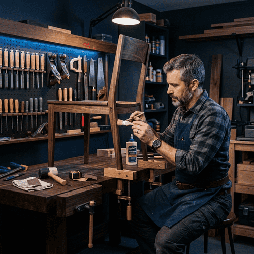
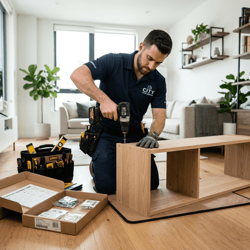
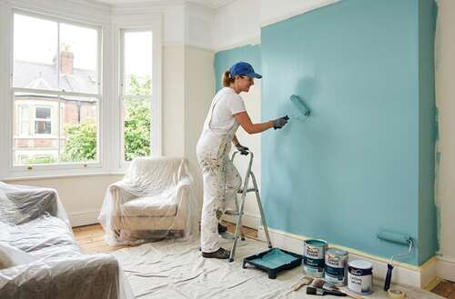
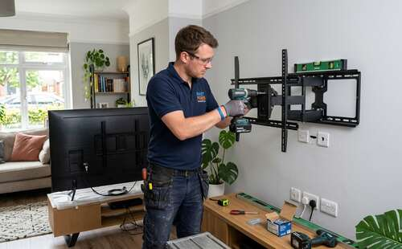
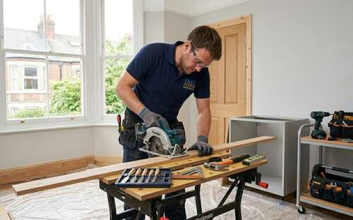

Meșter local in Mures si Cluj
Ai nevoie de un meșter profesionist? Vali Handyman rezolvă tot, rapid și garantat! Economisește timp și scapă de stresul reparațiilor din casă. Fie că este vorba despre montaj de mobilier, remedieri electrice sau sanitare, finisaje sau mentenanță generală, îți punem la dispoziție servicii de handyman la cele mai înalte standarde de calitate.
Serviciile noastre
Oferim o gamă completă de servicii profesionale pentru a acoperi toate nevoile dvs. de reparații, întreținere și instalare.

Montaj pardoseli
Servicii de înaltă calitate pentru montarea parchetului laminat și din lemn, executate cu o atenție deosebită la detalii.
Vezi servicii pardoseli
Reparații mobilier
Reparații profesionale pentru piesele dvs. dragi de mobilier din lemn.
Explorează reparații mobilă
Asamblare mobilier
Asamblare rapidă și sigură a mobilierului de tip flat-pack (la pachet), garantând stabilitate structurală și siguranță.
Vezi asamblare mobilă
Instalații sanitare
Soluții experte pentru instalații sanitare, inclusiv remedierea scurgerilor, montarea chiuvetelor și configurarea băilor.
Descoperă instalațiile sanitare
Servicii electrice
Instalații electrice sigure și certificate, montaj corpuri de iluminat și diagnosticarea circuitelor.
Explorează serviciile electrice
Zugrăvit și amenajări
Servicii premium de vopsitorie și amenajări interioare pentru a vă împrospăta locuința cu finisaje impecabile.
Vezi servicii de zugrăvit
Curățenie generală
Servicii complete de curățenie a casei și a curții pentru un mediu de viață impecabil și curat.
Vezi servicii de curățenie
Montare TV pe perete
Fixare pe perete a ecranelor TV, perfect dreaptă, cu organizarea estetică a cablurilor pentru un aspect modern.
Explorează montarea TV
Tâmplărie
Servicii profesionale de tâmplărie și dulgherie pentru lucrări personalizate din lemn și instalații specifice.
Descoperă tâmplăriaDe ce să alegi Vali Handyman?
Punctuali și serioși
Ajungem întotdeauna la timp și finalizăm lucrările eficient, fără a face compromisuri la calitate.
Complet asigurați
Proprietatea dumneavoastră este complet protejată pe întreaga durată a intervenției noastre.
Calitate premium
Utilizăm echipamente de ultimă generație și tehnici de lucru precise pentru rezultate uimitoare.
Întrebări frecvente
Găsiți răspunsuri la cele mai comune întrebări despre serviciile noastre de handyman
Cât de repede puteți răspunde în cazul unor reparații urgente?
Oferim servicii de urgență în aceeași zi pentru probleme stringente legate de instalații sanitare, defecțiuni electrice sau elemente de siguranță. Pentru lucrările obișnuite, programarea se face de regulă în 1-2 zile.
Oferiți cotații de preț gratuite?
Da! Oferim estimări gratuite și fără niciun fel de obligație pentru toate serviciile noastre. Trimiteți-ne un mesaj pe WhatsApp cu detaliile proiectului dvs. și vă vom oferi o ofertă competitivă.
Sunt meșterii dvs. calificați și asigurați?
Absolut. Toți tehnicienii noștri sunt pe deplin calificați, certificați și asigurați. Deținem o asigurare cuprinzătoare de răspundere civilă pentru a vă proteja proprietatea.
Ce zone deserviți?
Deservim cu mândrie localitatile Cluj-Napoca si Targu Mures si zonele învecinate, inclusiv.
Oferiți garanție pentru lucrările efectuate?
Da, oferim o garanție de 12 luni pentru manoperă și materiale. Suntem dedicați satisfacției dvs. și vom reveni pentru a remedia orice problemă apărută, fără costuri suplimentare.
Ce metode de plată acceptați?
Acceptăm numerar, transfer bancar și majoritatea cardurilor de credit/debit. Plata se efectuează numai după finalizarea și verificarea lucrării.
Ce spun clienții noștri
Nu ne credeți doar pe cuvânt – iată părerile clienților noștri mulțumiți!
"Vali Handyman ne-a transformat bucătăria cu lucrări profesionale de tâmplărie. Atenția la detalii a fost excepțională, iar lucrarea a fost finalizată la timp și în bugetul stabilit. Recomand cu încredere!"
"Am avut nevoie de ajutor urgent cu instalațiile sanitare târziu în noapte. Cei de la Vali Handyman au răspuns rapid și au reparat țeava spartă în mod profesionist. Serviciul lor prin WhatsApp a făcut rezervarea extrem de simplă!"
"Lucrări electrice remarcabile pentru renovarea casei noastre. Au instalat sisteme noi de iluminat peste tot și ne-au ajutat chiar și cu montarea televizorului pe perete. Curați, profesioniști și de încredere."
Sunteți gata să începem?
Contactați-ne astăzi pentru o cotație gratuită dedicată oricărui serviciu de handyman de care aveți nevoie. Suntem aici pentru a vă transforma planurile de renovare în realitate.